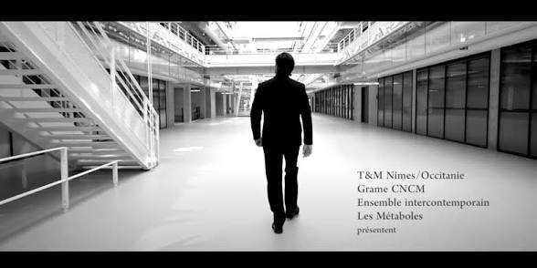

·  — Sebastian Rivas — Antoine Gindt — Philippe Béziat — Léo Warynski — Les Métaboles · Ensemble intercontemporain Ensemble intercontemporainLavoir Numérique (Gentilly)GRAME — Rayon N, étape 1 (film de Julien Ravoux)T&M Paris — Rayon N